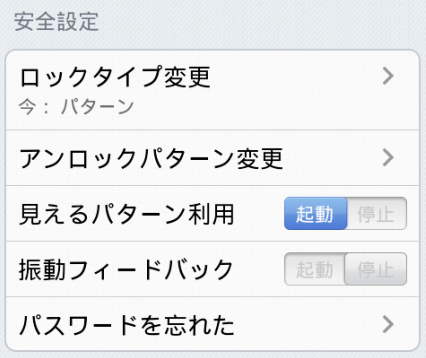
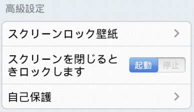

スマートロックをご利用頂き、誠に感謝しております。各機能の設定は下記の教程で説明します。
• 基本設定

- ロック状態
- ロック遅延
- 遅延時間
- 状態欄表示
- 状態欄表示透明
スマートロック起動/停止 （アンロックパターンが設定されない場合、ロック機能を起動する時、アンロックパターンの設定が必要になります）。
一定のロック遅延時間以内に、保護されるアプリケーションは再びパターンロックアンロックを入力する必要がありません。
ロック遅延の時間を設定します。
状態欄でスマートロックの状態を表示するかどうかを設定します。タスクマネージャより強制に停止され、保護失効にならないようにするため、オンにするようにお勧めいたします。
状態欄表示を透明にするかどうかを設定します。

- ロックタイプ変更
- アンロックパターンPIN又はパスワード変更
- 見えるパターン使用（パターンロックを使用する時のみ見えます）
- 振動フィードバック
- パスワードを忘れた
パターンロック、PINロック又はパスワードロックを選択します。
アンロックパターンPIN又はパスワード変更。
パターンロックをアンロックする時にパターンを表示するかどうかを設定します。
パターンロックを入力する時振動フィードバックが必要するかどうかを設定します。
パスワードを忘れた場合、アンロックパターンをリセットするため、アンロックリセット質問を設定します。

- スクリーンロック壁紙
- スクリーンオフ時ロック
- 自己保護
気に入ったスクリーンロック壁紙を選びます。
携帯スクリーンがオフする時、改めて保護されるアプリケーションをロックします。
システムプログラム管理及びandroid市場をロックするかどうかを選ぶことにより自己保護します（デフォルトとして全部ロックします）。